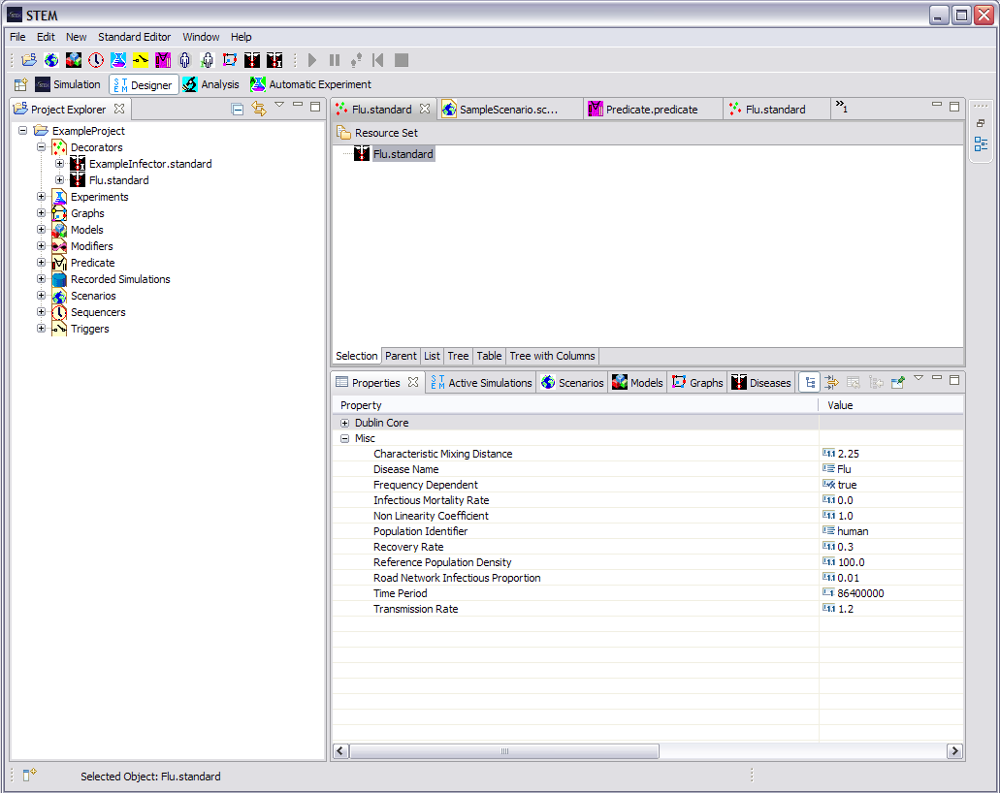

The properties view allows you to edit the properties of components in your scenario, such as disease models, infectors and sequencers. As shown in the figure below, after selecting a disease model with the properties view open, the properties of the model is shown. It is possible to change any of the parameters in the disease model by left-clicking on its value. After changing one or more parameters, remember to save the disease model (Ctrl+S) to pick up the changes the next time you run a simulation. 